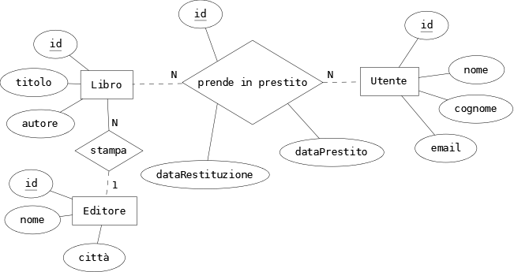
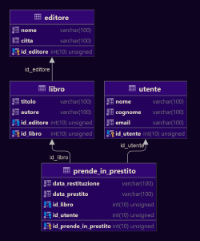

Diagramma ER - Biblioteca

Il diagramma ER rappresenta una biblioteca. La biblioteca è costituita da diverse entità: Libro, Utente e Editore. Tra Libro e Utente vi è una relazione N a N, ciò significa che un libro può essere preso in prestito da molti utenti e un utente può prendere in prestito molti libri. Mentre tra Libro e Editore vi è una relazione N a 1, ciò significa che un libro deve essere stampato da un editore e un editore può stampare molti libri. All'interno dell'entità Libro c'è la chiave esterna dell'editore, id_editore.
Entità
- Libro
- Utente
- Editore
Relazioni
- Libro - Utente N a N
- Libro - Editore N a 1
Attributi
- Libro: (id: int, titolo: string, autore: string)
- Utente: (id: int, nome: string, cognome: string, email: string)
- Editore: (id: int nome: string, città: string)
In fine è stato creato lo schema logico del diagramma ER, ovvero vengono create le rispettive tabelle delle entità. Queste tabelle vengono utilizzate all'interno del database.
